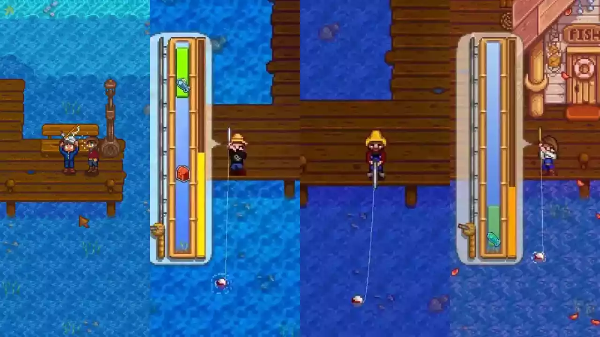
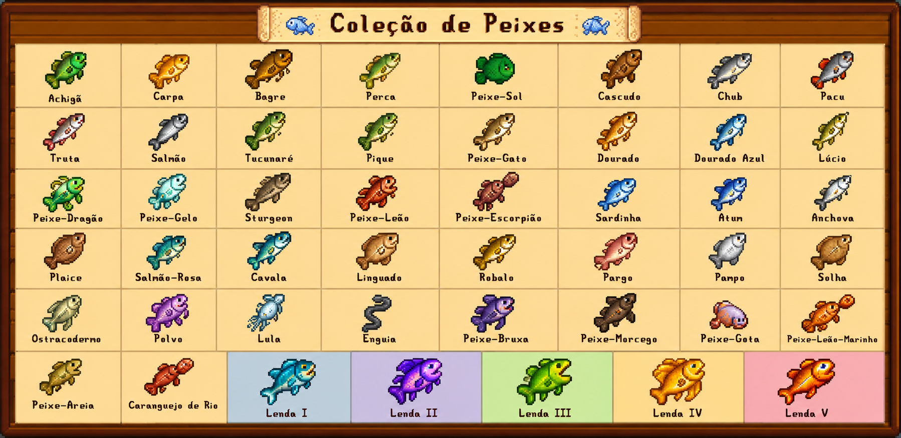
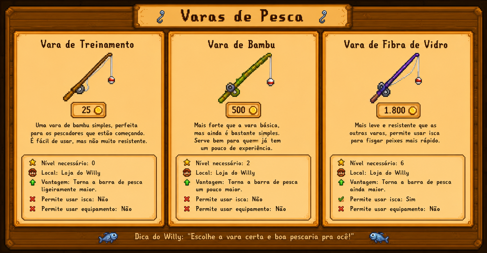

🐠Guia Completo de Pesca em Stardew Valley 🎣
A pesca é uma das habilidades mais lucrativas e importantes de Stardew Valley. Ela serve para ganhar dinheiro, completar o Centro Comunitário, cozinhar receitas, criar viveiros de peixes e capturar peixes lendários.
🐚Como funciona a pesca??
Quando o peixe morde a isca, aparece um minijogo. Você deve manter a barra verde acompanhando o peixe até preencher a barra de progresso. Quanto maior seu nível de pesca, maior será a barra verde e mais fácil será capturar os peixes. Alem disso durante a pesca talvez você tenha a sorte de se deparar com um bau na barra, dentro dele ha um grande leque de opções que podem ser encontradas,novamente dependendo da sua sorte(ou de como Espíritos estarão).


𖦹°.🫧Os Peixes de Stardew Valley🫧.°𖦹
Os peixes de Stardew Valley são divididos em diferentes categorias de acordo com o local onde vivem. Existem os peixes de rio, encontrados nos rios da Vila Pelicanos e da Floresta Cinzaseiva; os peixes de lago, pescados nas montanhas; os peixes do oceano, capturados na praia; e também espécies exclusivas de lugares especiais, como as Minas, o Deserto de Calico e a Ilha Gengibre.
Além do local, muitos peixes só aparecem em determinadas estações do ano,horários ou quando o clima está favorável, como em dias de chuva. Isso faz com que cada pescaria seja diferente e incentive o jogador a explorar o mapa durante todas as épocas do ano.
Também existem os famosos Peixes Lendários, considerados os mais raros do jogo. Eles aparecem apenas uma vez por mundo e exigem bastante habilidade, paciência e uma boa vara de pesca para serem capturados.
Cada peixe possui seu próprio valor de venda, dificuldade de captura e utilidade. Alguns são usados em receitas, outros servem para completar o Centro Comunitário, abastecer viveiros de peixes ou simplesmente aumentar a coleção do jogador. Por isso, conhecer as diferenças entre as espécies é uma das partes mais importantes para quem deseja se tornar um verdadeiro mestre da pesca em Stardew Valley.

⚓varas de pesca por Velho Willy
"Ô, pescadô! Se ocê tá começando agora, presta atenção num conselho de quem já passou a vida no mar. Cada vara tem seu jeitim e serve pra um tipo de pescaria. A Vara de Treinamento é boa pros cabra que tão aprendendo, pois facilita pegar os peixe mais mansinho. Já a Vara de Bambu é simples, confiável e dá conta do recado pra quem tá pegando gosto pela pescaria.
Agora, se ocê quiser fisgar uns peixe mais arisco, vai precisá da Vara de Fibra de Vidro. Com ela dá pra usar isca, e isso ajuda demais a atrair peixe mais depressa. Mas a melhor de todas é a Vara de Irídio. Essa é coisa fina! Nela ocê pode colocar isca e também equipamento de pesca, que melhora a qualidade das fisgada e facilita pegar até aqueles peixe danado de difícil.
Num importa qual vara ocê escolha, o segredo é ter paciência, cuidar do anzol e nunca desistir. O rio sempre recompensa quem respeita o tempo da natureza
Desenvolvido por Manuelly Machado Nascimento em 2026